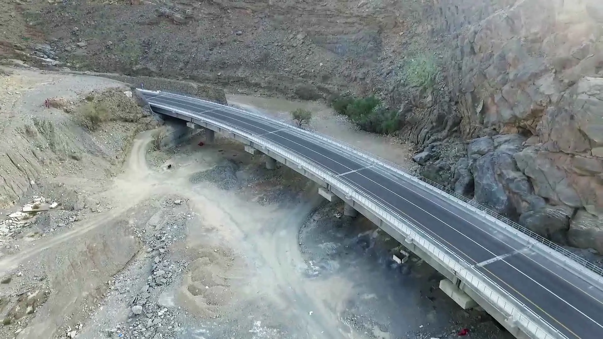
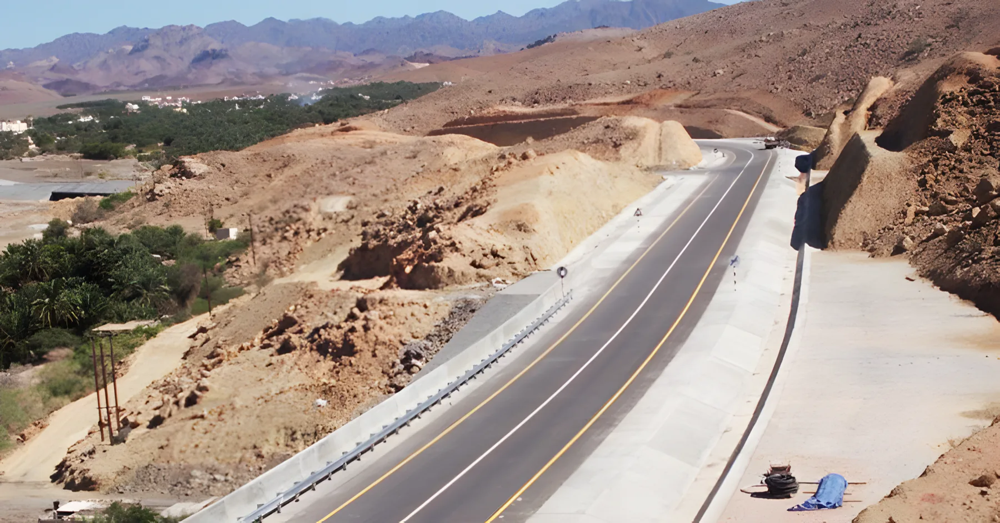
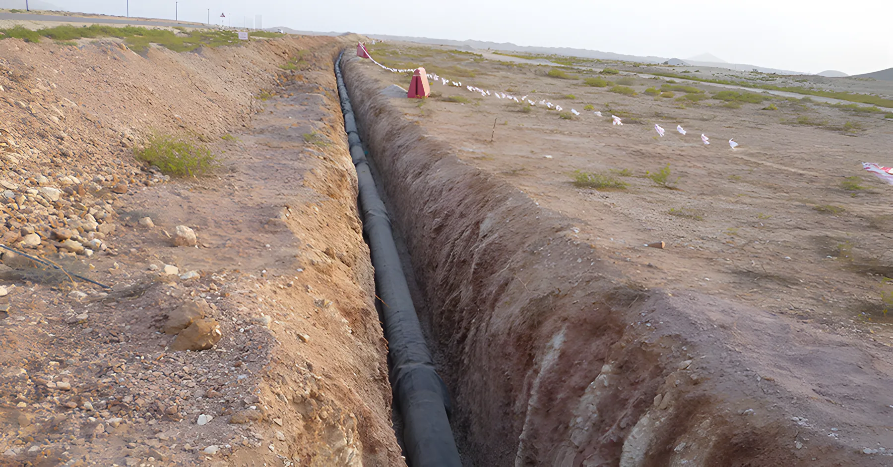
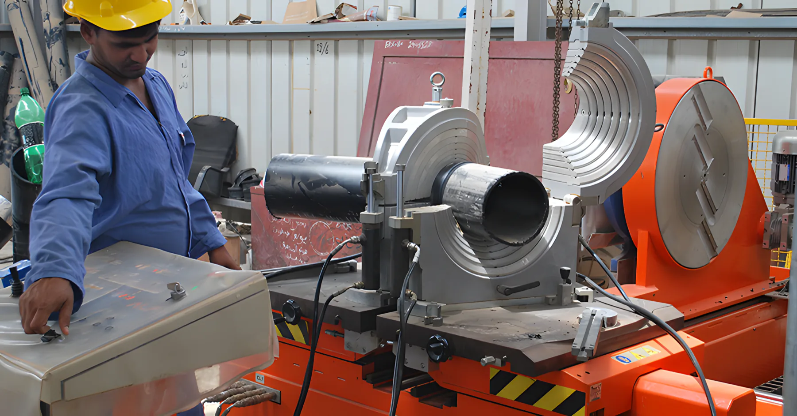
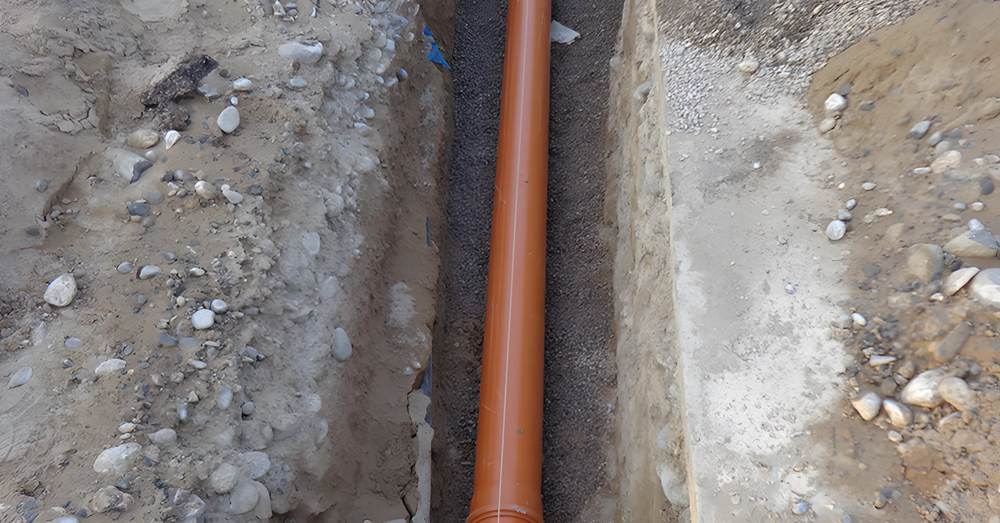
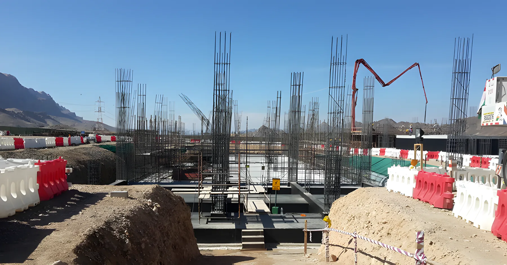
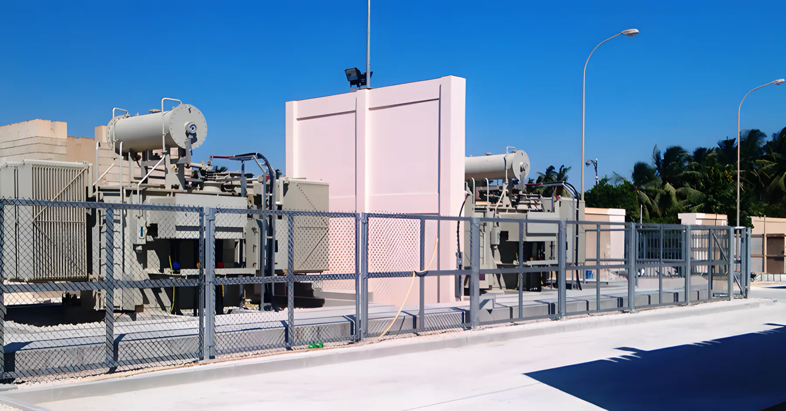
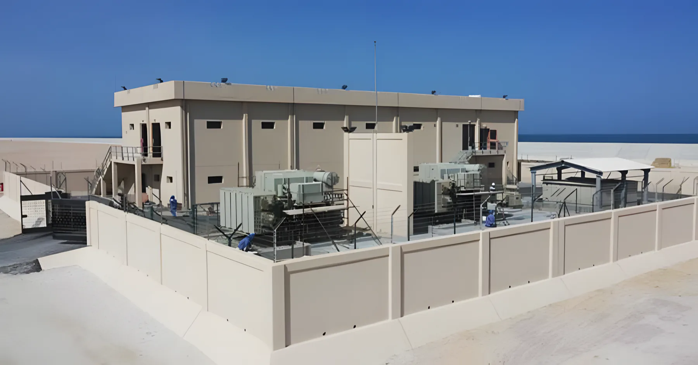
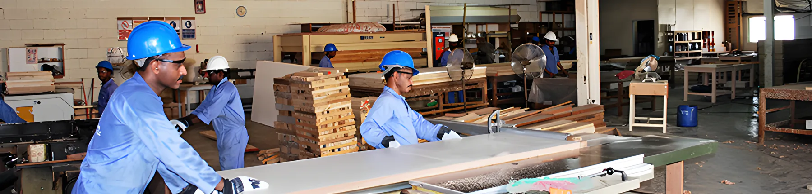

مجالات العمل
ثمانية أقسام تحت سقف واحد، بأسطولنا ومهندسينا وورشنا. نأخذ المشروع من التصميم إلى التسليم، أو ننفّذ الجزء الذي تحتاجه.

الطرق والجسور
أُنشئ هذا القسم لتنفيذ مشاريع البنية الأساسية في السلطنة: الطرق والجسور والطرق السريعة ومنشآتها. نفّذنا أكثر من 600 كم من الطرق، من الطرق الداخلية والعبّارات إلى ازدواجية الطرق وتوسعتها.
لدينا قسم متكامل لتصميم الطرق بمهندسين متخصصين، وكثير من مساراتنا يمرّ في أرض صعبة بين الجبال والأودية، حيث تكون الخدمات اللوجستية نصف العمل.
يشمل
- الطرق والطرق السريعة ومنشآتها
- التقاطعات والجسور العلوية
- العبّارات والجدران الاستنادية وحواجز الحماية
- ازدواجية الطرق وتوسعتها
- قسم تصميم خاص بأعمال الطرق
مشاريع
- Upgrading of Sohar Roundaboutصحار
- Asphalt Road to Wadi Al Sahtanالرستاق
- Dualization of Al Rustaq Escarpment Roadالرستاق
- Yanqul – Fida – Dank Roadينقل
- Upgrading Salan Roundaboutصحار
- Grade Separated Junctions, Batinah Highwayطريق الباطنة


المباني
ينفّذ هذا القسم جميع أنواع المباني: المنشآت الصناعية، والمباني التجارية والسكنية، والمدارس والكليات والمستشفيات والمساجد.
نفّذنا وصُنّا مستشفيات ومباني حكومية ومجمعات فلل فاخرة وأبراجاً ومنشآت حديدية ومستودعات ومصانع وصالات عرض سيارات ومخيمات للمشاريع.
يشمل
- المباني الحكومية والوزارات
- الكليات والمدارس والجامعات
- المستشفيات والمراكز الصحية
- المباني التجارية والسكنية والأبراج
- المنشآت الحديدية والمستودعات والمصانع
- المساجد وصالات العرض ومخيمات المشاريع
مشاريع
- A'Sharqiyah Universityإبراء
- Headquarters building, Ministry of Interiorالخوير، مسقط
- Extended Health Centre, Seebالسيب، مسقط
- Caledonian College of Engineering Campusمرتفعات المطار، مسقط
- Central Control Buildingبوشر، مسقط
- Office Building at Bausherبوشر، مسقط
- Language Centre Buildingالخوير، مسقط


شبكات إمداد المياه
نحن مسجّلون لدى الهيئة العامة للكهرباء والمياه لتمديد الأنابيب حتى قطر 600 مم مع الأعمال المدنية المرتبطة بها.
يمدّ القسم خطوط إمداد المياه ويبني الخزانات ومحطات معالجة المياه ومنشآت حجز المياه في أنحاء السلطنة. في هيماء كان ذلك 276 كم من الأنابيب من خزان الدقم.
يشمل
- خطوط إمداد المياه
- الخزانات الأرضية والمرتفعة
- محطات الضخ
- محطات معالجة المياه
- منشآت حجز المياه
مشاريع
- Water Supply System for Haymaالوسطى
- Water Supply to Ras Al Hadd Villageرأس الحد، صور


شبكات الصرف الصحي ومحطات المعالجة
يمدّ هذا القسم شبكات الصرف الصحي ويبني محطات المعالجة ومحطات الضخ وخطوط الدفع لمياه الصرف والمياه المعالجة، مع غرف التصريف وتنفيس الهواء.
في بركاء نفّذنا شبكة الجاذبية وثلاث محطات ضخ ومحطة معالجة بطاقة 6,000 م³ يومياً مع نظام SCADA. وفي مسقط، كان مشروع المعبيلة وحده 458 كم من خطوط الصرف لصالح Haya Water.
يشمل
- شبكات الصرف بالجاذبية والتوصيلات المنزلية
- محطات معالجة مياه الصرف
- محطات الضخ وخطوط الدفع
- خطوط المياه المعالجة
- غرف التصريف وتنفيس الهواء
مشاريع
- Mobella Wastewater Projectالمعبيلة، مسقط
- Al Amerat Gravity Sewer Networkالعامرات، مسقط
- A'Seeb Wastewater Projectالسيب، مسقط
- A'Seeb Wastewater Project, Package 01المعبيلة، مسقط
- Sewerage Network and STP, Barkaبركاء



نقل الكهرباء وتوزيعها
ننفّذ مشاريع EPC لمحطات 132 و33 و11 كيلوفولت لمشاريع البنية الأساسية والصناعية والتجارية والسكنية في أنحاء السلطنة.
مسجّلون لدى OETC وDCRP (الفئة أ) وRCA وشركات المرافق الأخرى، ولدينا فريق متخصص لكابلات الضغط العالي وخطوط النقل والمحطات وإنارة الشوارع.
يشمل
- محطات 132 و33 و11 ك.ف (EPC)
- كابلات الضغط العالي الأرضية
- خطوط النقل الهوائية
- وحدات RMU ولوحات التوزيع
- إنارة الشوارع
مشاريع
- 132/33 kV Yanqul Grid Station & Ibri Regional Buildingينقل وعبري
- Substation in Duqmالدقم
- Substation in Salalahصلالة



الأعمال الكهروميكانيكية
يتولى القسم الكهروميكانيكي تمديدات الكهرباء للمباني والسباكة والتكييف وتركيب الطاقة والإنارة الصناعية والمنزلية وتركيب المعدات الكهربائية والميكانيكية.
في مشروع ديار رأس الحد شمل ذلك شبكات المياه والإطفاء والري ومياه الأمطار والصرف، وكابلات 11 ك.ف والجهد المنخفض، وإنارة الشوارع ومحطة فرعية، إلى جانب الأعمال المدنية.
يشمل
- تمديدات الكهرباء والطاقة للمباني
- السباكة والصرف الداخلي
- التكييف
- الإنارة الصناعية والمنزلية
- تركيب المعدات الكهربائية والميكانيكية
مشاريع
- Infra Civil & MEP Works, Diar Ras Al Haddرأس الحد، صور
- A'Sharqiyah Universityإبراء


الألمنيوم والزجاج
يصنّع هذا القسم ويركّب جميع أنواع أبواب ونوافذ الألمنيوم وأعمال الزجاج ووحدات المطابخ والكاونترات.
ورشة الألمنيوم مجهّزة بالكامل، بفريق مدرّب وذي خبرة ومعدات دقيقة حديثة.
يشمل
- أبواب ونوافذ الألمنيوم
- أعمال الزجاج
- وحدات المطابخ
- الكاونترات

النجارة والأعمال الخشبية
مكتب وورشة النجارة والديكور الداخلي داخل مقر الشركة الرئيسي: ورشة بمساحة 1,000 م² مع ساحة منفصلة بمساحة 1,500 م².
ينفّذ قسم النجارة جميع أنواع الأعمال الخشبية، وتولّى أعمال الديكور الداخلي في عدد من المشاريع الكبيرة.
يشمل
- جميع أنواع النجارة والأعمال الخشبية
- أعمال الديكور الداخلي
- ورشة بمساحة 1,000 م²
- ساحة منفصلة بمساحة 1,500 م²

تواصل معنا
المكتب الرئيسي والورشة الرئيسية، مسقط
ص.ب 2053، الرمز البريدي 111، مكتب البريد المركزي، سلطنة عُمان
للمناقصات والاستفسارات العامة وتسجيل الموردين والوظائف: اتصل بنا أو راسلنا على البريد.
- هاتف
- +968 2450 2581 / 82 / 83
- فاكس
- +968 2450 2532